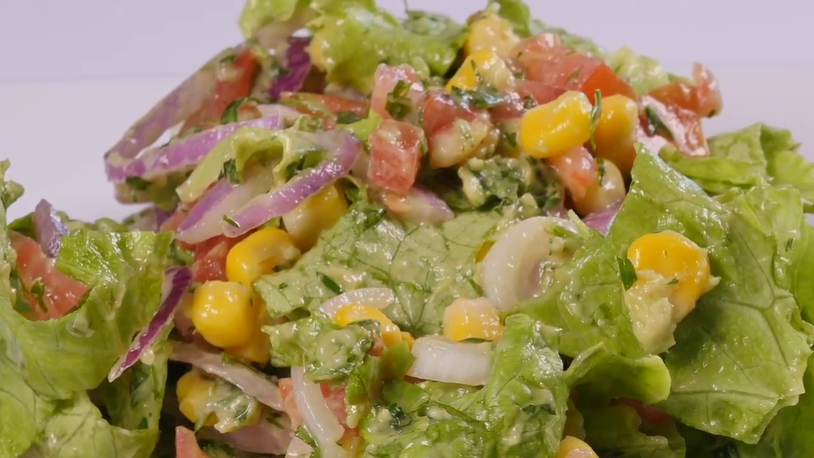

-
Aliñar ingredientes: Primero vamos a aliñar los filetes de marrajo con ajo troceado, perejil picado y añadimos un poco de sal y un chorrito de zumo de limón.

-
Preparar ensalada: Ahora vamos a preparar la ensalada. Para ello troceamos lechuga, pelamos y cortamos un aguacate y cortamos unos tomates cherrys por la mitad. Colocamos todos los ingredientes de la ensalada en un plato. Y preparamos el aliño.

-
Preparar salsa: En un bol ponemos zumo de limón, un chorrito de aceite de oliva y removemos bien unos segundos hasta que la salsa emulsione y se integren bien todos los ingredientes.
-
Mezclar salsa con ensalada: Agregamos sal a la ensalada, un poco de pimienta negra molida y le añadimos el aliño que acabamos de preparar. Ya tenemos la ensalada preparada.
 -
Dorar pescado: Después, en una sartén ponemos un poco de aceite de oliva y cuando esté caliente echamos los filetes de pescado, marrajo, y los doramos bien por ambas partes hasta que estén hechos.
-
Emplatar ensalada y pescado: Cuando estén listos los sacamos y servimos junto con la ensalada que hemos preparado antes.